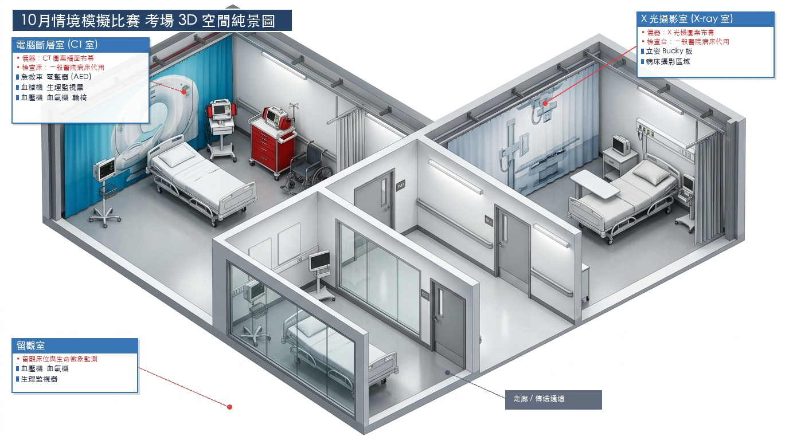

🏢 考場 3D 空間配置與動線規劃示意
空間維度

🔍 點擊放大檢視 3D 考場全景
圖：10 月情境模擬競賽考場 3D 空間配置純景圖
涵蓋電腦斷層室（CT 室）、X 光攝影室與留觀室三大主要空間。
🖥️ 電腦斷層室（CT 室）
標準病人 (SP)
📍 現場情境：一位標準病人在電腦斷層剛完成打顯影劑檢查
場地佈置：CT 圖案牆面布幕、一般醫院病床代用為檢查台。
🚨 急救車
⚡ 電擊器 (AED)
🩸 血糖機 (Accu-Chek)
📊 生理監視器
🩺 血壓/血氧機
♿ 病患輪椅
📷 一般 X 光攝影室（X-ray 室）
模擬假人 (Manikin)
📍 現場情境：模擬假人因胸痛與腹痛等待照相（chest AP + chest decubitus）
場地佈置：X 光機圖案布幕、一般醫院病床代用檢查台、立姿 Bucky 板、病床攝影區域。
🩻 立姿 Bucky 板
🛏️ 病床攝影區域
🛡️ 輻射防護鉛衣
📋 病人核對卡
🛏️ 留觀室（Observation Room）
生命徵象監測
場地佈置：留觀床位與生命徵象監測區域。
🩺 血壓機
💓 血氧機
📈 連續生理監視器